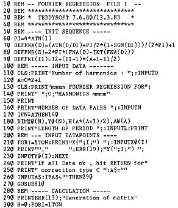
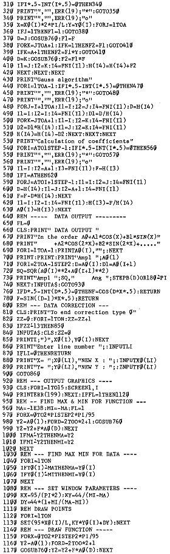

80-Bus Journal |
Mai 1983 · Ausgabe 5 |
Fourier Analysen erlauben, aus gegebenen Werten die Grundfunktion zu errechnen, aus der die Werte entstanden sind. Die Funktion hat die Form:
y=A0+A1*sin(x+PHI1)+A“*sin(2*x+PHI2)+
+A3*sin(3*x+PHI2)+.........
Man kann die Funktion auch in dieser Form darstellen:
y=a0+a1*cos(x)+b1*sin(x)+
+a2*cos(2*x)+b2*sin(2*x)+
+a3*cos(5*x)+b3*sin(3*x)+.....
Je mehr Glieder man anhaengt, desto genauer kann eine Funktion wiedergegeben werden.
Praktische Anwendung ist in der Schwachstromtechnik die Ermittlung von Oberwellen. Voraussetzung fuer eine Fourier Analyse sind aequidistante Daten, also Messwerte, die nach gleich grossen Phaseninkrementen gewonnen werden. Michael BACH zeigte im Heft 1 1983 eine Pascal Version einer Fast Fourier Transformation, die das TV Bild von Guenter Boehm analysiert.
Bedingt durch das Aufzeichnungsverfahren hatte ich bei einer Sonnenfinsternis Messwerte, die nicht aequidistant waren. Eine weitere Erschwernis war, dass die Messwerte stark streuten. Ich war also gezwungen, von einer Fourier Analyse abzugehen und musste mir eine Regression schreiben, die natuerlich viel langsamer laeuft, aber dafuer Messwerte mit beliebiger Phasenbesetzung verarbeitet. Es ist beim Gebrauch darauf zu achten, dass mehr Messwerte als Freiheitsgrade vorhanden sind. Waehlt man beispielsweise eine sehr hohe (noch zulaessige) Anzahl von Oberwellen und draengt die Messwerte in der Naehe eines Phasenpunktes zusammen, dann sieht man zwar einen guten Fit der Messwerte, aber im freien Bereich beginnt die rueckgerechnete Kurve wild zu schwingen. Wenn Interesse besteht, schicke ich ein Programm mit einer Lagrange Interpolation, bei der das schoen zu sehen ist.
(Besteht Interesse ? Red.)
 | Seite 20 von 28 |
|---|